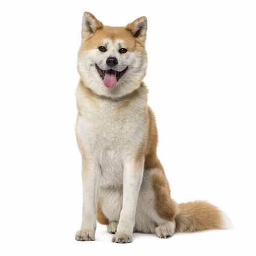

Akita Inu
Personalidad
Son perros fuertes, tanto físicamente como de carácter, y no se recomiendan para dueños primerizos. Hace falta experiencia en el manejo, adiestramiento y socialización, tanto inicial como continua. No obstante, son muy fieles a su familia. Son valientes y buenos guardianes y no ladran demasiado. No hay que olvidar que tiene un fuerte instinto de caza.
Origen
El akita, que se crio originalmente en la provincia de Akita en el siglo XVII, es la raza japonesa de mayor tamaño. Algunas teorías afirman que estos perros se criaron originalmente para la caza del jabalí, el ciervo y el oso negro; sin embargo, otras sostienen que el objetivo eran las peleas de perros. Aun así, cuando las peleas de perros perdieron popularidad en Japón (y en Europa), estos perros se emplearon para la caza. A finales del siglo XIX, se importaron otras razas y las razas japonesas quedaron relegadas a un segundo y tercer plano. Se creó entonces la Sociedad para la Conservación de los Perros Japoneses con el fin de conservar las razas autóctonas, que se declararon patrimonio nacional.